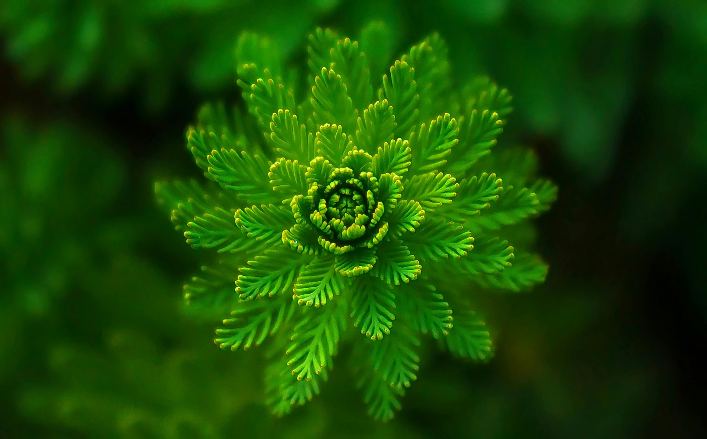
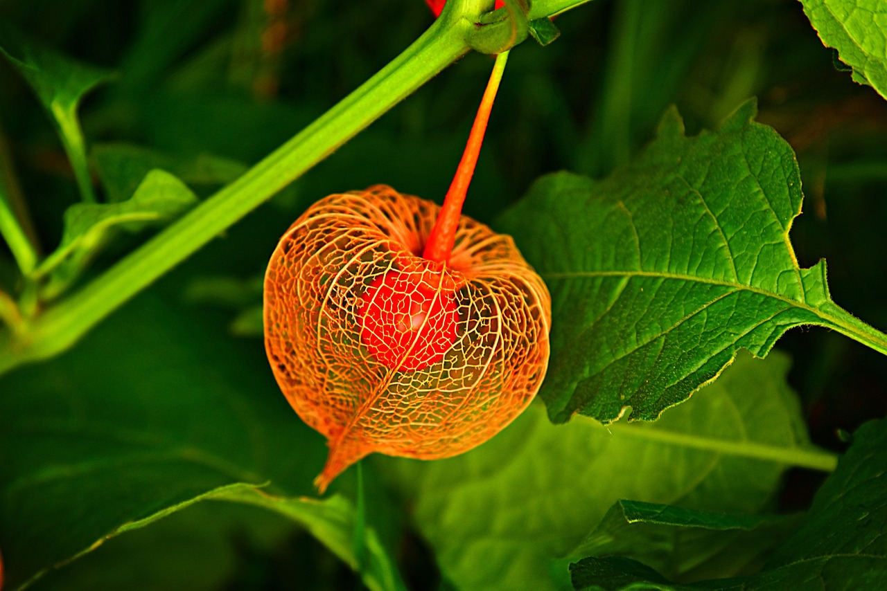
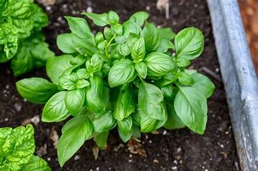
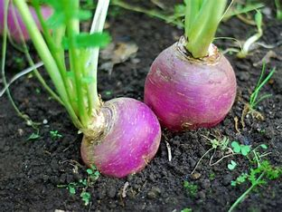

Plants are more than just greenery—they're the very essence of life, beauty, and our connection to nature. From the towering trees that give us oxygen to the delicate flowers that brighten our days, plants are at the heart of our environment. At Nature's Deck, we celebrate this incredible diversity, offering you the chance to explore over 100 unique plant species. Each card is a portal to discovering their uses, history, and how they can enrich your life. Whether you're an avid gardener or a casual nature lover, there's always something new to learn and appreciate.
Whether you're here to dive deep into plant knowledge, marvel at nature's beauty, or just satisfy a passing curiosity, Nature's Deck is your doorway to the fascinating world of plants. Imagine stumbling upon a rare species you've never heard of or finally learning the secret to keeping that one tricky plant alive. This isn’t just another website; it’s your personal plant companion, full of stories, tips, and insights to spark your love for nature. So, grab a cup of tea, settle in, and let’s explore the wonders of the plant kingdom together. Who knows what new favorite you’ll discover today? 
Did you know that plants like Basil not only enhance your dishes with their aromatic flavors but also come with a host of benefits? Basil is incredibly easy to grow, making it a perfect choice for beginners looking to add a touch of green to their homes. Beyond its culinary uses, this versatile plant has medicinal properties, aiding in digestion and boosting immunity. Whether in a sprawling garden or a small windowsill pot, Basil thrives effortlessly, proving that even the smallest plants can have a big impact.
Or that Tulips, with their vibrant array of colors, symbolize perfect love and carry centuries of cultural significance? These beautiful flowers are not only stunning in appearance but are also surprisingly resilient. With a bit of care, Tulips can thrive in various climates, adding a burst of color to gardens worldwide. Their history dates back to the Ottoman Empire, where they were cherished as a symbol of wealth and elegance. Today, they continue to inspire awe and admiration in gardens, bouquets, and art.
I am a solo web developer who is passionate about making and sharing projects, And i am excited to say that Nature's Deck had been my one of the first and best projects ever, I loved nature ever since i was a kid and to make a website around plants was an exciting idea to me.
At an early age i was alot into science fiction shows and movies, i wanted to do something awesome like make a robot or create something cool, i first started coding around 12, i was introduced on how to make game through code. My first language was c# and i used game engines like unity to make games, i enjoyed it alot but than i delve deeper into the world of programming finding out about so many things i didnt knew.
I was at first kinda overwhelmed, even though i was young i felt like i should probably have a clear direction of where i want to go(which i didnt had :/ ) considering my interest in programming, i tried some things and eventually got introduced to web-development. So i dedicated myself to actually learn something and went for it.
After i felt like i had enough skill in web-dev i decided to try and make something, i wanted to make something original to prove that i actually learned something and not just copy of a toturial, i didnt wanted to make a youtube clone or a clone of a website, so i was looking for ideas while watching some web-designing videos when i got the idea of a card like deck website. I did made some similar layouts during my learning so i felt i was confident enough to do it and create a original layout.
I was still somewhat unsure of this idea while browsing through internet for some plants biography but wasnt able to find any which would provide quick info on plants so i thought maybe that could work as a first project? I created a some-what prototype first visioning the layout in a side-project and it looked pretty awesome so i decided to move forward with this project.
And that's my story on how i got into programming and made Nature's Deck as one of my first website. If you want to checkout my other projects or look for me on social media you can easily get my account's info by either clicking the link below or navigating to the contact's tab. Thank you all for checking out my project!
For contact info you can go to the contacts page for more info